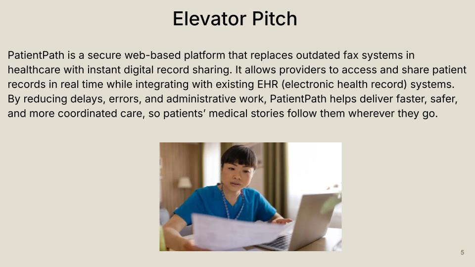

Presentations
PatientPath Presentations
This section contains the PatientPath elevator pitch along with all Feasibility and Design presentation iterations developed over the course of the project.
Elevator Pitch
The slide below summarizes the core idea behind PatientPath and the value it provides to healthcare providers and patients.

Feasibility Presentations
The feasibility presentations document the early analysis of the problem space, proposed solution, market context, risks, and project feasibility.
Feasibility — Version 1
The first feasibility iteration establishes the initial problem framing, solution concept, and high-level feasibility analysis for PatientPath.
Feasibility — Version 2
The second feasibility iteration refines the analysis based on teacher and class feedback, including updated risk color-coding and tightened problem–solution alignment.
Design Presentations
The design presentations build on the feasibility work to define the technical architecture, user stories, feature table, user roles, database schema, algorithms, and sprint plan for PatientPath.
Design — Version 1
The first design iteration introduces the core system architecture, user stories, feature table, and supporting design components for PatientPath.
Design — Version 2
The second design iteration expands the technical depth of the system with refined user stories, a split feature table, external interface APIs, development tools and dependencies, and a complete sprint plan.